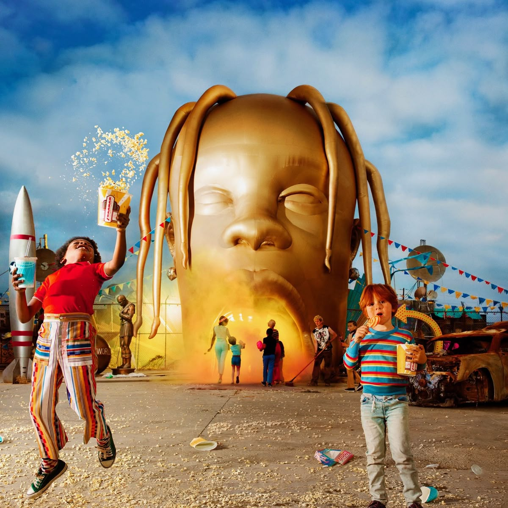

Internacional
Travis Scott
Sobre o artista
Rapper e produtor de Houston, nos Estados Unidos. É conhecido por misturar trap, efeitos vocais e produções atmosféricas em seus álbuns e shows.
5 músicas para conhecer
- FE!N
- SICKO MODE
- goosebumps
- HIGHEST IN THE ROOM
- BUTTERFLY EFFECT